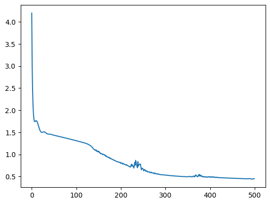

# %pip install mapieimport os
os.environ["CUDA_VISIBLE_DEVICES"] = "3"
import numpy as np
import torch
import torch.nn as nn
import torch.distributions as dist
from tqdm import tqdm
from sklearn.calibration import calibration_curve
from sklearn.metrics import classification_report
import matplotlib.pyplot as plt
import seaborn as sns
from mapie.metrics import regression_coverage_score
device = torch.device("cuda" if torch.cuda.is_available() else "cpu")torch.manual_seed(0)
N = 100
x = dist.Uniform(-1, 1).sample((N, 1)).sort(dim=0).values
x_test = torch.linspace(-1, 1, 2 * N).view(-1, 1).sort(dim=0).values
y = 3 * x**3 - 2 * x + 1
y_noisy = y + dist.Gamma(0.1, 0.3).sample((N, 1))
plt.plot(x, y, label="true", color="C0")
plt.scatter(x, y_noisy, label="noisy data", color="C1")
plt.legend()
print("x.shape:", x.shape, "y.shape:", y.shape)x.shape: torch.Size([100, 1]) y.shape: torch.Size([100, 1])
Define a Gaussian/Gamma MLP
class ProbabilisticMLP(nn.Module):
def __init__(self, input_dim, feature_dims, type):
super().__init__()
self.input_dim = input_dim
self.feature_dims = feature_dims
self.type = type # "gaussian" or "gamma"
self.layers = nn.ModuleList()
self.layers.append(nn.Linear(input_dim, feature_dims[0]))
for i in range(len(feature_dims) - 1):
self.layers.append(nn.Linear(feature_dims[i], feature_dims[i + 1]))
self.layers.append(nn.Linear(feature_dims[-1], 2))
# likelihood parameters
# if self.type == "gaussian":
# self.register_buffer("likelihood_mean", torch.zeros(1))
# self.likelihood_log_std = nn.Parameter(torch.zeros(1))
# elif self.type == "gamma":
# self.likelihood_log_concentration = nn.Parameter(torch.zeros(1))
# self.likelihood_log_rate = nn.Parameter(torch.zeros(1))
def forward(self, x):
for layer in self.layers[:-1]:
x = torch.relu(layer(x))
if self.type == "gaussian":
# y_pred = self.layers[-1](x)
# likelihood_mean = self.likelihood_mean.expand(y_pred.shape[0])
# likelihood_log_std = self.likelihood_log_std.expand(y_pred.shape[0])
# likelihood_std = torch.exp(likelihood_log_std)
# return y_pred, likelihood_mean, likelihood_std
y_out = self.layers[-1](x)
mean = y_out[:, 0]
log_std = y_out[:, 1]
std = torch.exp(log_std)
return mean.ravel(), std.ravel()
elif self.type == "gamma":
# y_pred = self.layers[-1](x)
# likelihood_log_concentration = self.likelihood_log_concentration.expand(
# y_pred.shape[0]
# )
# likelihood_log_rate = self.likelihood_log_rate.expand(y_pred.shape[0])
# likelihood_concentration = torch.exp(likelihood_log_concentration)
# likelihood_rate = torch.exp(likelihood_log_rate)
# return y_pred, likelihood_concentration, likelihood_rate
y_out = self.layers[-1](x)
log_concentration = y_out[:, 0]
log_rate = y_out[:, 1]
concentration = torch.exp(log_concentration)
rate = torch.exp(log_rate)
return concentration, rate
def loss_fn(self, y, param1, param2):
if self.type == "gaussian":
# epsilon = y - y_pred
# mean = param1
# std = param2
# dist = torch.distributions.Normal(mean, std + 1e-6)
# return -dist.log_prob(epsilon).mean()
mean = param1
std = param2
dist = torch.distributions.Normal(mean, std + 1e-3)
return -dist.log_prob(y.ravel()).mean()
elif self.type == "gamma":
# epsilon = torch.clip(y - y_pred, min=1e-6, max=1e6)
# concentration = param1
# rate = param2
# dist = torch.distributions.Gamma(concentration, rate)
# return -dist.log_prob(epsilon).mean()
concentration = param1
rate = param2
dist = torch.distributions.Gamma(concentration + 1e-3, rate + 1e-3)
return -dist.log_prob(y.ravel()).mean()Fit Gaussian MLP
torch.manual_seed(0)
model = ProbabilisticMLP(1, [32, 32], "gaussian").to(device)
optimizer = torch.optim.Adam(model.parameters(), lr=0.01)
n_epochs = 500
pbar = tqdm(range(n_epochs))
losses = []
for epoch in pbar:
optimizer.zero_grad()
param1, param2 = model(x.to(device))
loss = model.loss_fn(y_noisy.to(device), param1, param2)
loss.backward()
optimizer.step()
losses.append(loss.item())
pbar.set_description(f"loss: {loss.item():.4f}")
plt.plot(losses)loss: 0.4503: 100%|██████████| 500/500 [00:01<00:00, 291.18it/s]
# sns.kdeplot(param2.cpu().detach().numpy(), label="std")with torch.no_grad():
y_mean, y_std = model(x_test.to(device))
y_mean = y_mean.cpu().numpy().ravel()
y_std = y_std.cpu().numpy().ravel()
# y_mean = y_pred.cpu().numpy().ravel() + mean.cpu().numpy().ravel()
# y_std = std.cpu().numpy().ravel()
plt.plot(x, y, label="true", color="C0")
plt.scatter(x, y_noisy, label="noisy data", color="C1")
plt.plot(x_test, y_mean, label="y_mean", color="C2")
plt.fill_between(
x_test.squeeze(),
y_mean - 2 * y_std,
y_mean + 2 * y_std,
alpha=0.3,
color="C2",
label="95% CI",
)
plt.legend()with torch.no_grad():
y_mean, y_std = model(x.to(device))
y_mean = y_mean.cpu().numpy().ravel()
y_std = y_std.cpu().numpy().ravel()
upper = y_mean + 2 * y_std
lower = y_mean - 2 * y_std
regression_coverage_score(y_noisy.numpy(), lower, upper)0.91Fit Gamma MLP
model = ProbabilisticMLP(1, [32, 32, 32], "gamma").to(device)
optimizer = torch.optim.Adam(model.parameters(), lr=0.01)
n_epochs = 1000
pbar = tqdm(range(n_epochs))
losses = []
for epoch in pbar:
optimizer.zero_grad()
param1, param2 = model(x.to(device))
loss = model.loss_fn(y_noisy.to(device), param1, param2)
loss.backward()
optimizer.step()
losses.append(loss.item())
pbar.set_description(f"loss: {loss.item():.4f}")
plt.plot(losses)loss: 0.0775: 100%|██████████| 1000/1000 [00:03<00:00, 266.98it/s]from scipy.special import gammaincinv, gamma
with torch.no_grad():
concetration, rate = model(x_test.to(device))
concetration = concetration.cpu().ravel().numpy()
rate = rate.cpu().ravel().numpy()
y_mode = (concetration - 1) / rate
quantile_fn = lambda p: gammaincinv(concetration, gamma(concetration) * p) / rate
upper = quantile_fn(0.975)
lower = quantile_fn(0.025)
plt.plot(x, y, label="true", color="C0")
plt.scatter(x, y_noisy, label="noisy data", color="C1")
plt.plot(x_test, y_mode, label="mean", color="C2")
plt.fill_between(
x_test.squeeze(),
lower,
upper,
alpha=0.3,
color="C2",
label="95% CI",
)
plt.legend()
with torch.no_grad():
param1, param2 = model(x.to(device))
concetration = param1.cpu().numpy().ravel()
rate = param2.cpu().numpy().ravel()
upper = quantile_fn(0.975)
lower = quantile_fn(0.025)
regression_coverage_score(y_noisy.numpy(), lower, upper)0.07